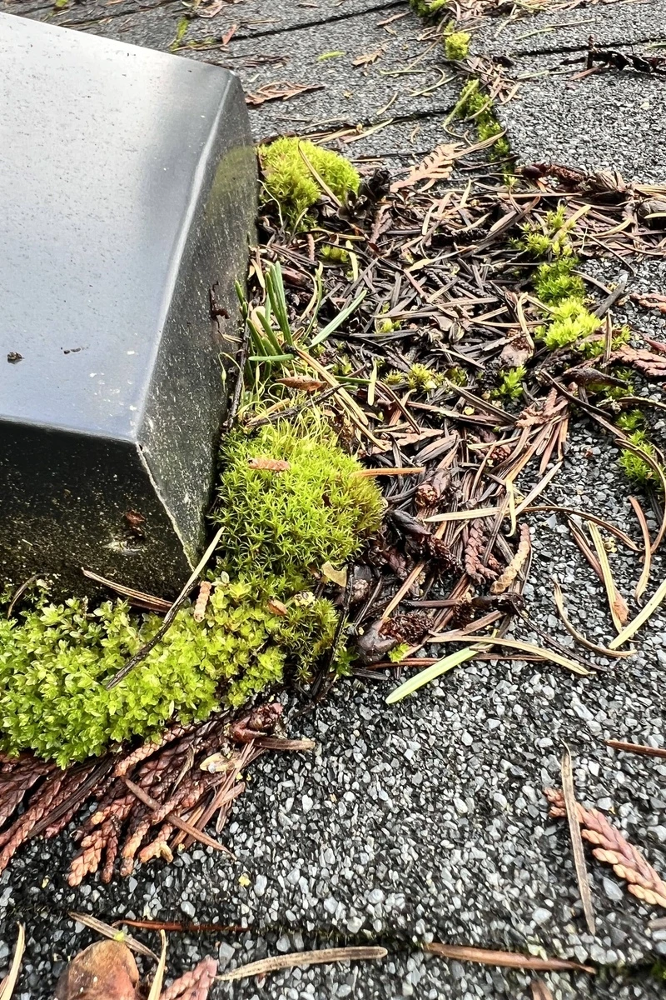
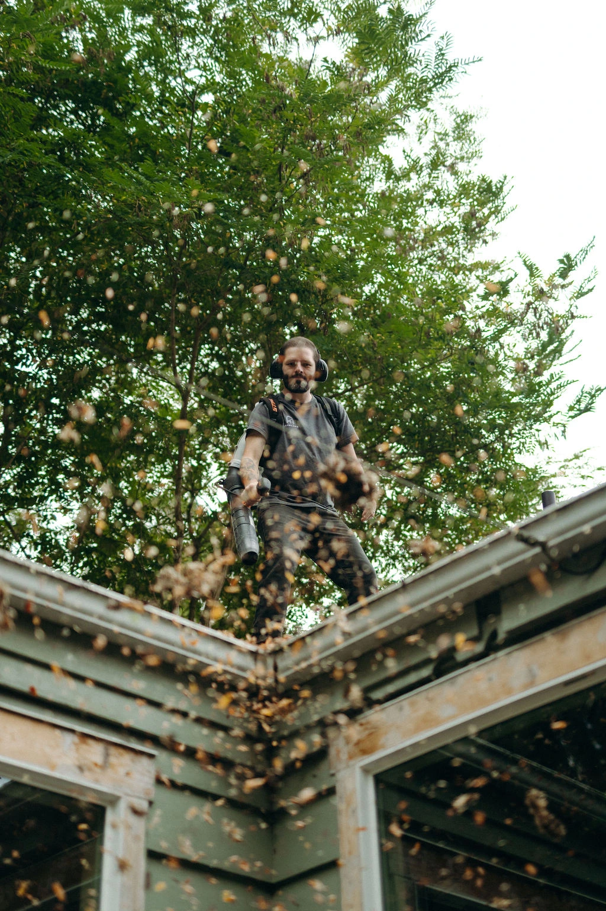
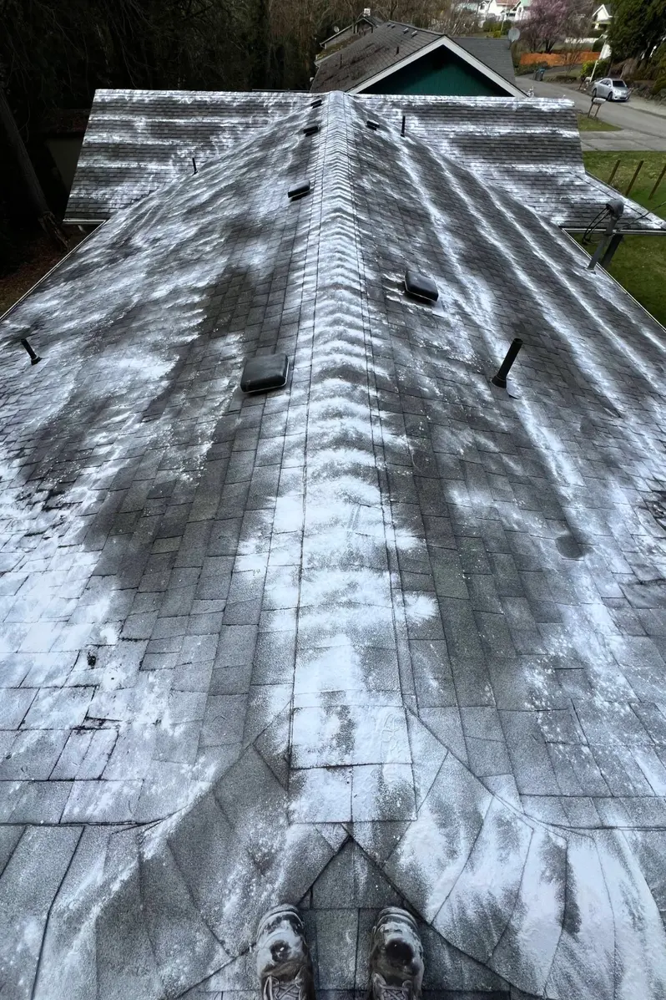

.svg)
Moss Removal and Moss Prevention
We provide ecologically responsible and effective moss removal and prevention services that won't harm your roof or void your warranty. Serving residential and commercial clients across Kitsap County.
Contact us today for a free estimate!



OUR PROCESS
- Before applying a moss treatment, we always recommend blowing debris off the roof and cleaning your gutters and downspouts. Applying the treatment to a debris-free surface maximizes effectiveness.
- We then evenly apply sodium bicarbonate (i.e., baking soda) to the ridgeline and at regular intervals down the entire field of the roof.
- Over time, baking soda changes the pH (i.e., acidity) of the roof, gradually killing existing moss and preventing future growth.
- Moss prevention requires ongoing maintenance, especially in our rainy PNW climate. Depending on how much moss there is, several treatments may be required before all of the existing moss dies off.
- After the moss dies, it will become brittle and will easily come off the roof during the next roof cleaning service without the need for forcible removal.
*As a matter of policy, we do not use forcible moss removal methods or use any harsh chemicals. If you are looking for immediate and forcible removal of any visually noticeable moss, we encourage you to contact a company willing to take the associated risks to health and property.
TESTIMONIALS
Frequently Asked Questions (FAQs)
Is moss bad for my roof?
Yes, moss is bad for your roof, especially over the long-term. Due to our climate here in the Pacific Northwest, moss grows rapidly on roof surfaces. If left unchecked, moss will erode the roof shingles and eventually lift the shingles away from the roof surface, creating the potential for leaks and other serious damage.
What's the best way to get moss of my roof?
At SeaGlass Cleaning Services, we opt for what we believe to be the safest and most effective long-term solution: sodium bicarbonate. Sodium bicarbonate, otherwise known as baking soda, kills moss and prevents future growth by altering the pH of the roof surface. Baking soda won't remove the moss all at once. After application, existing moss will start to die and the altered pH will prevent further growth. If the moss is extensive, it will take multiple treatments to completely eradicate. Regularly cleaning and treating your roof with sodium bicarbonate will guarantee a moss-free roof!
Some companies opt for a more aggressive approach involving brushes, pressure washers, or other tools to mechanically remove the moss - but this won't prevent future growth and can easily damage the shingles and void your roof warranty. Using harsher chemicals (especially those containing zinc) are effective at killing moss but can cause health problems for the person applying the treatment and the run-off is harmful to pets, plants, and wildlife.
Can I remove moss from my roof without hiring a professional?
When it comes to moss removal and moss treatment, we strongly recommend that you leave it to the professionals. To safely apply a moss treatment to any roof, you need training and experience as well as specialized equipment (e.g., work boots with appropriate tread, a safety harness and rope, ladders, ladder stand-offs, ladder stabilizers). Due to the equipment needed and the risk involved, it is much faster, safer, and more cost-effective to hire a licensed and insured professional. In the USA alone, over half a million people are admitted to the emergency room every year for ladder related injuries.